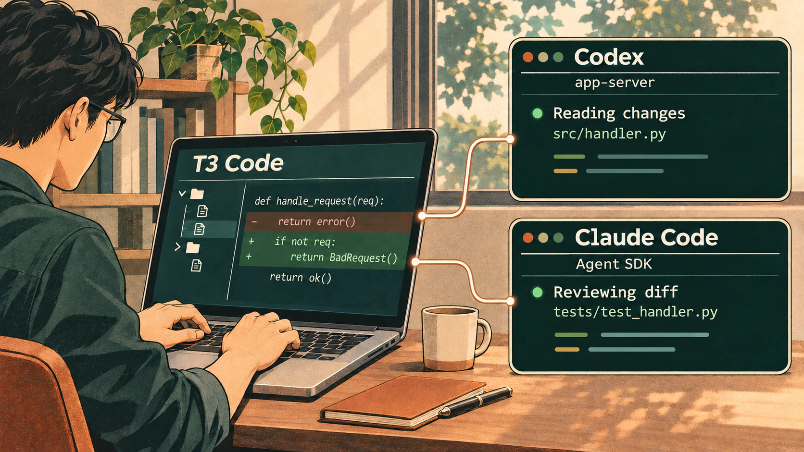
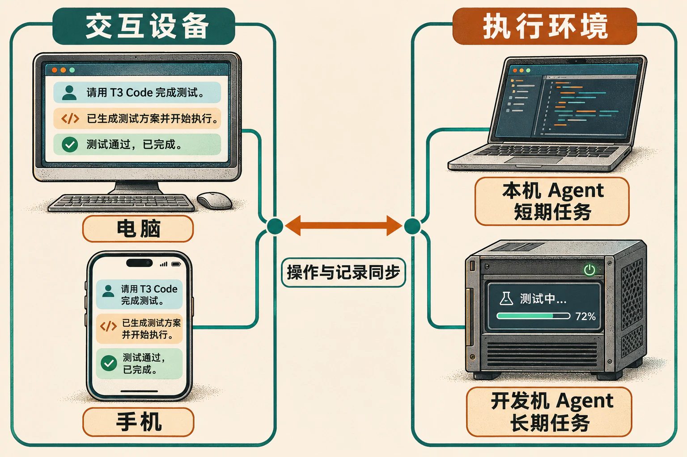
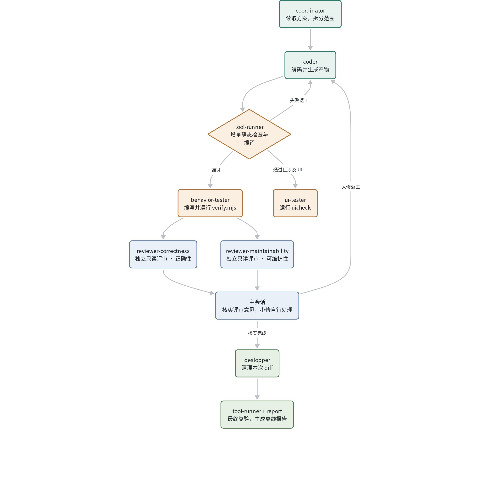
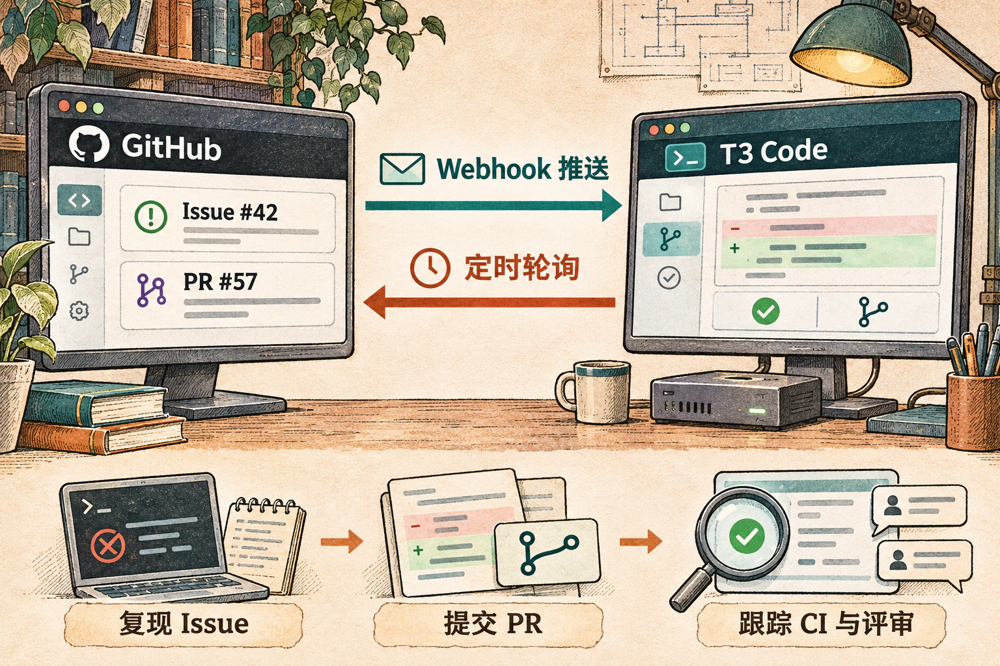
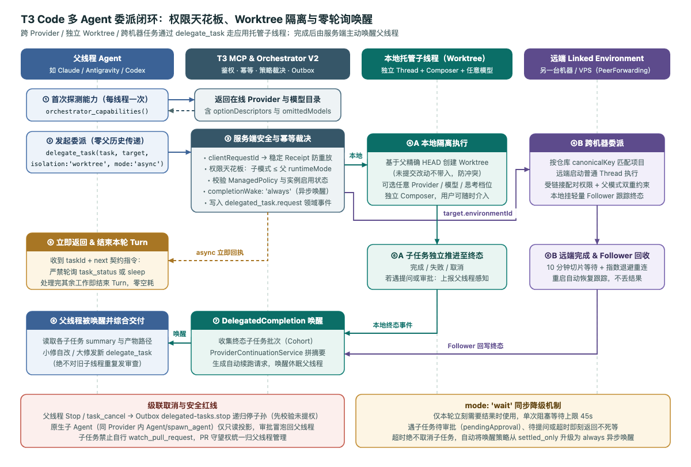
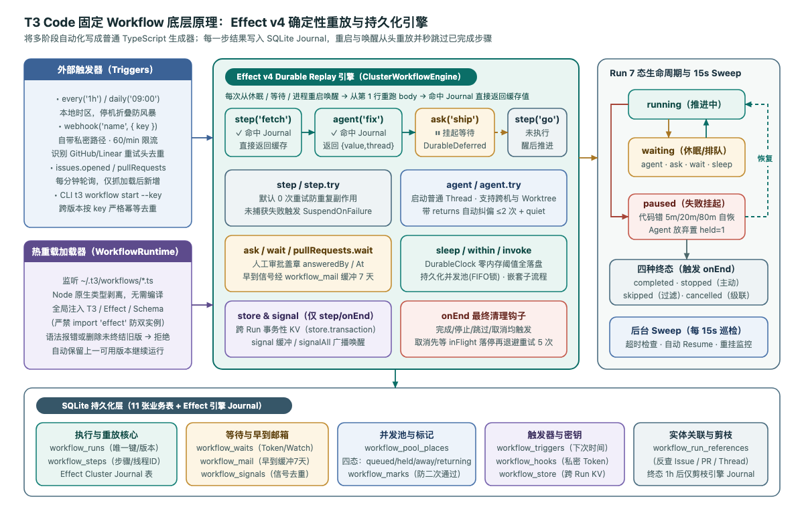
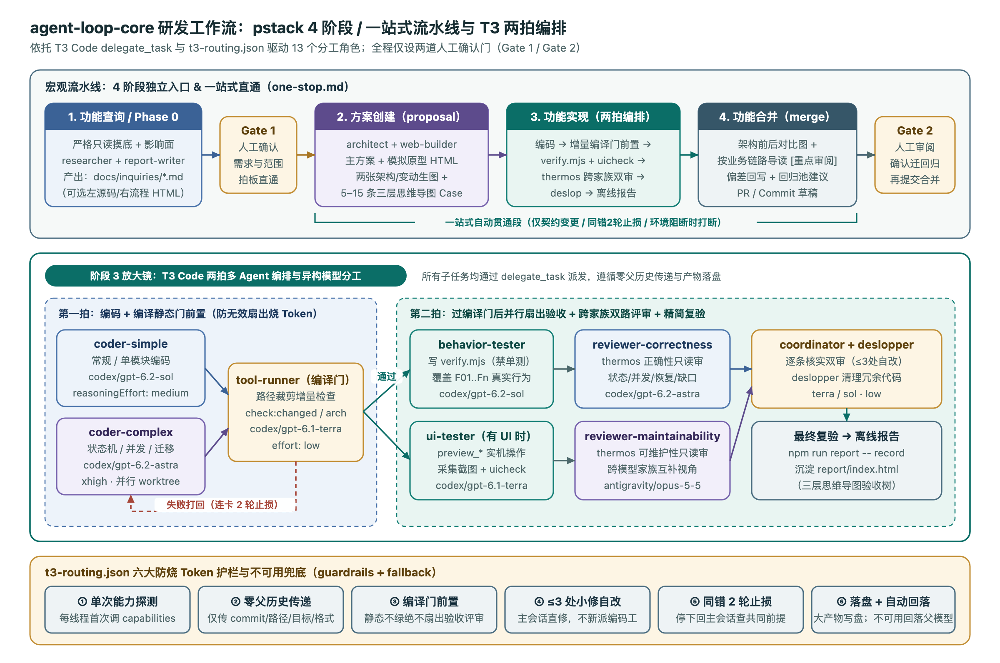

最近 T3 Code 在 X 上很火，个人体验了两周，效果确实很惊艳。主要场景通过手机控制家里电脑，多个订阅组合开发，提升 Antigravity 的体验等。通过这款软件也认识一个新名词：ADE（Agentic Development Environment），体验上确实比 Codex、Claude Code、DSH 好不少。参考这个思路，我认为未来会有企业级别的 ADE 产品，真正帮助企业提效，推动企业开发效率。
但是 T3 Code 的作者最近也挖出后台数据收集，在 X 上有不少针对华人和中文区歧视的言论，大家根据需求看是否使用。类似的软件还有：Orca（国人作者）、Paseo、Herdr（命令行）等。
想了解 T3 Code 的具体用法，可以读 Flavio Copes 的文章《A deep dive into T3 Code》。文中用示例讲解了怎样用手机连接开发环境、配置 Git 工作树，以及在不同 Agent 之间委派任务。
场景介绍
T3 Code 是一个基于编码 Agent，针对编码场景进一步集成了多设备、原生调试、Git 工作树（Git worktree）隔离等能力的编码工具。最近个人编码全面迁移到 T3 Code，尤其针对以下场景效率和体验提升非常多。
原生 Agent 兼容
T3 Code 不自建 Agent Harness，而是基于各种成熟的 Harness 环境（例如 Codex、Claude Code）进行编码。可以做到一个工具同时切换不同的 Harness 环境，通过这种方式可以做到：
- 账号沿用所选厂商支持的授权方式，遵从各类编码订阅计划的协议，避免封号
- 部分模型订阅可以直接跨 Harness 使用，避免频繁配置，例如 OpenRouter 里面订阅的 DeepSeek 可以用于各个 Harness
- 一个软件界面可以同时操作多种 Harness，避免频繁的软件切换。

多设备同步
手机和电脑都可以连接任一已配对、可达的环境，直接给其中的 Agent 下达指令。例如，在电脑上向开发机提交全量回归，离开工位后用手机打开同一线程，批准待执行的命令，回到电脑即可查看这次审批和后续测试结果。整个过程共用一份服务端记录，执行主机保持在线即可持续工作。

工作流定制
工作流按角色分配模型和 Harness（运行模型并调用工具的编码客户端）。完美适配有多个编码工具订阅的用户，可以根据模型成本、Harness 能力按需切换。如下图，是我个人根据 pstack 改造的一个迭代工作流。

角色 | 职责 | 模型 | Harness |
|---|---|---|---|
coordinator | 读取方案，拆出改动范围和验收条件。 | Opus 5.5 | Claude Code |
coder | 实现变更并生成产物，接收编译失败和评审退回的修改。 | Gemini 4 Neon | Antigravity |
tool-runner | 先做增量静态检查和编译。交付前复验并生成离线报告。 | GPT-6.1 Terra | Codex |
behavior-tester | 编写并运行 verify.mjs，验证关键行为。 | GPT-6.1 Terra | Codex |
ui-tester | 涉及界面变更时运行 uicheck，核对交互与显示。 | GPT-6.1 Terra | Codex |
reviewer-correctness | 独立只读评审，检查行为、边界条件和回归风险。 | GPT-6.2 Astra | Codex |
reviewer-maintainability | 独立只读评审，检查模块职责、重复逻辑和维护成本。 | GPT-6.2 Astra | Codex |
主会话 | 核实两路评审意见。小修自行处理，大修交回 coder。 | Opus 5.5 | Claude Code |
deslopper | 清理本次 diff 中的冗余改动，交给 tool-runner 复验。 | GPT-6.1 Terra | Codex |
GitHub
T3 Code 可直接与你 GitHub 账号接通，接通后 Agent 可直接处理工单。
- Webhook 推送。GitHub 在创建 Issue 或 PR 时通知 T3 Code，按预设规则启动修复或代码审查。
- 定时轮询。可配置固定时间查询一次 GitHub，发现工作流启用后新建的 Issue 或 PR。Issue 可按标签筛选。
- PR Watch。检查 PR。CI 失败、他人提交评审意见或出现合并冲突时，原线程中的 Agent 会继续跟进。

核心对象
下面介绍 T3 Code 中的核心概念：
概念 | 定义 | 说明 | 举例 |
|---|---|---|---|
Environment（环境） | 一个运行中的 T3 Code 服务端及其可访问的机器资源。 | 维护本机的项目、凭据和持久状态。更换网络地址后仍可连接同一环境。 | Mac，开发机 |
Project（项目） | 环境内登记的开发项目，以文件系统目录为根。 | 一个环境可以登记多个项目。项目根目录、默认设置和线程均由该环境管理。 | 一个 GitHub 仓库 |
Workspace（工作目录） | 线程实际读取、编辑文件和运行命令的目录。 | 可以是项目当前检出，也可以是独立的 Git 工作树。共享同一检出的线程可以看到彼此未提交的改动。 | 一个 GitHub 仓库的一个 Git 工作树分支 |
Thread（线程） | T3 Code 为一项任务维护的持久记录。 | 保存消息、执行轮次、审批和工单或 PR 关联。关闭客户端、停止原生会话或更换提供方后，线程身份仍可保留。 | 一个对话，需要注意，在 T3 Code 这个会话可以对应多个集成 Agent 的对话 |
Turn（执行轮次） | T3 Code 从一次任务输入开始跟踪的一次执行。 | 同一线程包含多轮执行。Codex 在 /goal 模式下可以自行开始下一个原生执行轮次，T3 Code 可将多个原生执行轮次归入同一 run。 | 用户一次请求后面连带出来的多轮模型调用和工具调用 |
Provider session（Agent 会话） | T3 Code 通过适配器打开、恢复或停止的提供方运行时会话。 | 原生会话标识与 T3 Code 线程标识分别管理。能否恢复历史、接受中途输入或回退，取决于提供方的协议和能力。 | Codex 的一个会话 |
线程隔离的是对话记录，Git 工作树隔离的是检出文件。两条线程指向同一工作目录时，消息历史独立，文件修改彼此可见。即使使用独立 Git 工作树，端口、数据库和外部服务仍可能共享。
核心功能
T3 Code 最吸引重度工程用户的能力，并不是“同时开十个聊天框”，而是让一个主 Agent（例如 Claude Code 或 Antigravity）在执行任务的过程中，按需把子任务精准派发给另一个提供方（Provider）、另一种模型、另一档思考预算、一个全新隔离的 Git 工作树，甚至远端另一台 VPS 机器，并在所有子任务结束后自动被唤醒汇总。当前 T3 Code 一共支持以下几种多 Agent 机制：
- 动态 Agent 委派：流程由大模型临场规划，适合探索性研发任务；但步骤顺序不固定，遇到跨天等待或进程重启很难保证精确续跑。
- 固定工作流：面向高确定性、长周期、不可丢进度、不可重复产生副作用的多阶段流水线（例如
Issue 触发 → Agent 复现 → 人工拍板 → Worktree 修复 → 等待 CI → 自动合并 → 销毁临时机器）。
动态 Agent 委派
下图是一个动态 Agent 编排的实际流程，Orchestrator 是主要的消息路由组件。

动态编排的实现主要依靠 T3 Code 向各个 Agent 注入相关 MCP 工具实现，工具职责如下：
编排原语 / 工具组 | 核心职责 | 关键约束（防误用红线） |
|---|---|---|
| 派发受控子任务、级联中止子孙任务。 | 新评审或复查必开新 |
| 创建新的顶层独立线程（支持指定 | 仅在用户明确要求“开新线程”时使用，“subagent / delegate / parallel”绝不等于开顶层线程。 |
| 在线程之间做上下文 | 默认从 |
| 持续监听 PR 的 CI 失败/必检通过/新评审/冲突并唤醒线程。 | 子 Agent 无权开启 PR Watch，必须由父线程统一看管；一次开启持续生效，唤醒不是自动合并授权。 |
| 创建单提示词的定时（interval/fixed_time/once）或 Webhook 任务。 | Webhook URL 仅创建时返回一次，适合单轮定期动作；多阶段状态流转请用固定工作流。 |
| 向用户弹出安全单行卡片收集密码/Token/sudo，返回一次性 | 凭据不进入聊天记录，不落入模型上下文。 |
具体的 Agent 对象也可以开发者自行定义，并且通过 Skill 注入到核心提示词中。最后个人实践会有详细介绍。
固定工作流
固定工作流则主要依赖固定的 TypeScript 脚本实现，全程通过 SQLite 记录工作流执行进度，保证任务可恢复。
下面用一个覆盖 issues.opened、within 并发池、agent（带强类型 returns）、ask 人工审批、pullRequests.wait 与 onEnd 的真实范例，走一遍重放引擎的全链路状态跳变：
const { workflow, title, subject, agent, ask, step, within, stop, issues, pullRequests, Issue } = T3;
const Repro = Schema.Struct({
reproduced: Schema.Boolean,
rootCause: Schema.String,
});
const FixPr = Schema.Struct({ prUrl: Schema.String });
export default workflow(
"issue-autopilot",
{
version: 1,
payload: Issue,
concurrency: 4,
asks: { approveFix: "批准自动修复？" },
triggers: [issues.opened({ project: "/home/dev/app", labels: ["bug"] })],
onEnd: (issue, end) =>
issues.comment(issue, `流水线 ${end.id} 结束：${end.outcome} ${end.reason ?? ""}`),
},
Effect.fn(function* (issue) {
yield* title(`${issue.displayKey} ${issue.title}`);
yield* subject(issue);
// 1. 只读复现（返回强类型 Repro，自动链接 Issue）
const repro = yield* agent("reproduce", {
project: "/home/dev/app",
issue,
brief: `只读复现 ${issue.url}，严禁修改文件，定位根因后提交结果。`,
returns: Repro,
timeout: "30 minutes",
});
if (!repro.value.reproduced) return yield* stop("未能稳定复现");
// 2. 人工拍板（进入 Needs you 收件箱，最多等 2 天）
const decision = yield* ask("approve", {
kind: "approveFix",
title: `已复现 ${issue.displayKey}，是否派 Agent 在 Worktree 修复？`,
choices: ["fix", "hold"],
data: repro.value,
timeout: "2 days",
});
if (Option.isNone(decision) || decision.value.choice !== "fix") {
return yield* stop("人工暂缓修复");
}
// 3. 受并发池限流（最多 2 个构建同时跑）在隔离 Worktree 修复并提 PR
const pr = yield* within(
"builders",
{ limit: 2 },
agent("fix", {
project: "/home/dev/app",
workspace: { type: "worktree", baseRef: "origin/main", startFromOrigin: true },
runtimeMode: "full-access",
brief: `基于根因「${repro.value.rootCause}」修复 ${issue.url}，通过测试并开 PR。`,
returns: FixPr,
timeout: "2 hours",
}),
);
// 4. 挂起等待 PR Checks 落停（可跨数小时，重启不丢）
const standing = yield* pullRequests.wait(
"ci",
{ project: "/home/dev/app", url: pr.value.prUrl },
{ until: "checks", timeout: "2 hours" },
);
if (Option.isNone(standing) || standing.value.state !== "open" || standing.value.checks !== "passing") {
return yield* stop("CI 未通过或 PR 已关闭");
}
// 5. 确定性代码合并（step 默认 0 重试防重复操作）
yield* step("merge", { returns: Schema.Void }, pullRequests.act({ project: "/home/dev/app", url: pr.value.prUrl }, "merge"));
return { mergedPr: pr.value.prUrl };
}),
);将其执行流程可视化如下：

个人实践
最近研发流程受到 pstack 启发，相比之前主要优化了三点：
- 用代码沉淀足够多的 lint 规则，保证 UI 与设计一致，代码架构稳定和代码风格不腐化
- 通过不同 Agent 分工合作，让人能尽可能理解与掌控 AI 的代码变更，降低人的注意力。主要包括：
- 带原型和架构变更点的设计方案，设定模板的交付文档
- 对代码变更的 lint 检查结果，UI 产物的差别对比，性能分析结果
- 实际测试的执行快照
- 通过剧本组合 Skill，规范日常核心场景迭代流程。
基于 T3 Code 提供的原生多 Agent 编排与 pstack 提供的软件开发迭代思路，我们沉淀出了以下工作流
工作流
通过统一的一个 Skill 入口暴露：4 个主流程 + 1 条组合流水线，并将所有研发文档交付物规范落盘到 docs/：
阶段 / 剧本 | 边界与核心纪律 | 标准交付物与落位 | 关键质量机制 |
|---|---|---|---|
1. 功能查询 | 严格只读，零业务代码改动，固定 commit 基线，历史原因按需追查。 |
| 强制包含 1 个端到端具体例子、架构/流程图与 |
2. 方案创建 | 不区分新功能与 Bug；先查后聊、迭代收敛，严禁跳过确认直接编码。 |
| 离线原型必须标明 |
3. 功能实现 | 按已确认方案编码，偏差必须登记回写；严守 | 代码变更 + | T3 两拍编排：先过路径裁剪增量编译门，再并行扇出 |
4. 功能合并 | 帮助人类无黑盒审阅 AI 改动；停在确认门，未经人工拍板禁止迁脚本或合并。 |
| 禁止按文件名流水账罗列 diff，必须按“入口 → 裁决 → 持久化 → 适配”串讲并标 |
一站式开发 | 把 2 → 3 → 4 串为自动贯通流水线，全程只设 Gate 1（需求确认）与 Gate 2（合并确认）。 | 贯通交付方案/原型、代码、 | 仅在 3 种例外下中途打断：需改外部契约、同错连卡 2 轮止损、遇不可逆或环境阻断。 |
角色异构
为了把上述 4 阶段流程真正绑定到 T3 Code 的编排原语（orchestrator_capabilities、delegate_task、task_status、task_cancel），设计了机器可读配置 .agents/resources/t3-routing.json 与配套规范 t3-routing.md。把 5 款能力与成本梯度分明的模型精准分配给 13 个角色：
角色名 | 适用阶段 | 默认路由（Provider / Model） | 思考档位 | 职责与设计意图 |
|---|---|---|---|---|
| 1 / 2 / 3 / 4 | 沿用主对话模型（ | 沿用主对话 | 全局编排、迭代沟通、逐条核实双审发现、偏差登记与 ≤3 处小修自改。 |
| 1 / 2 | 浅层 |
| 只读查代码、追踪调用链（ |
| 2 |
|
| 复杂技术方案、状态归属与提交边界定型、 |
| 1 / 2 / 4 |
|
| 发挥长文结构化表达优势，撰写问询文档、主方案与按业务链路串讲的合并导读。 |
| 1 / 2 / 4 |
|
| 生图脚本、离线交互原型 |
| 3 |
|
| 步骤清晰的单模块常规编码、生成物同步与简单 Bug 修复。 |
| 3 | 主 |
| 跨包状态机、并发事务边界、崩溃恢复与 Schema 迁移；并行多路时切 |
| 3 |
|
| 第一拍守门员：低成本跑路径裁剪增量工具检查并收口报错位置。 |
| 3 |
|
| 按方案 |
| 3 |
|
| 驱动真实浏览器（ |
| 3 |
|
|
|
| 3 |
|
|
|
| 3 | 轻 |
|
|
配套的 fallback.policy: "inherit_parent" 保证任何路由模型不可用或触发限流时平滑回落至主对话模型并在交付摘要中显式披露。
